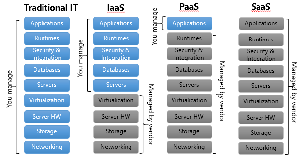
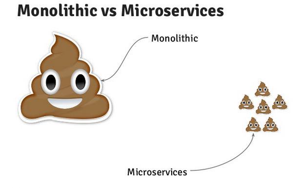
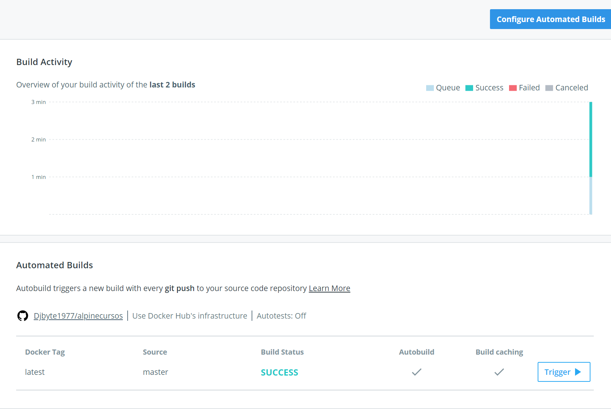
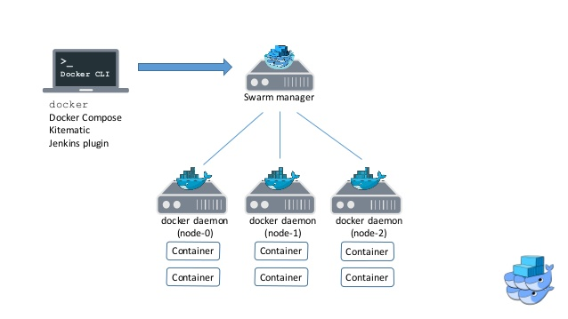

Acerca de quien os habla
¿Qué aprenderemos en este curso?
- Qué son los contenedores y qué beneficios aportan.
- Arquitectura y ecosistema de Docker.
- Comandos básicos de despliegue.
- Trabajar con volúmenes.
- Crear nuestros propios contenedores.
- Composición de contenedores.
- Escalado de servicios.
¿Qué necesitamos?
Do it yourself!
- Máquina virtual linux con Docker 17.10-ce. Aquí.
- Exponer puertos 22(222 host),8080
- Cliente SSH, como Putty. Aquí.
Lazy mode :P
- Play with Docker http://play-with-docker.com/
- Opcional: Private Key para Putty. Aquí.
Guarda tus proyectos!
- Cuenta en GitHub / Bitbucket.
OBJETIVO DEL CURSO
O casi...
UN POCO DE CONTEXTO...
Episode II
Attack of the Dockers
En el departamento de TI reina la inquietud. Desarrollo quiere desplegar varios miles de microservicios y el equipo de Sistemas no da abasto.
Este avalancha de despliegues, liderada por un analista evangelizador de Agile, ha provocado que al limitado número de administradores le resulte dificil gestionar los despliegues y mantener el orden en los sistemas.
Tras un periodo de formación, regresa uno de los arquitectos software más brillantes con una posible herramienta que podría equilibrar las fuerzas, y ayudar a los desbordados administradores...
Cloud Computing
Ofrece distintos tipos de componentes/servicios de forma estandarizada y ocultando su complejidad:
- Software as a Service (SaaS): Google Services, Microsoft...
- Platform as a Service (PaaS): Cloud Foundry, OpenShift, Heroku...
- Infrastructure as a Service (IaaS): Amazon, Azure, Open Stack...

Agile
Metodología de desarrollo que surge en contraposición al desarrollo en cascada.
- Iteraciones en las que van acometiendo tareas según prioridad.
- Promueve equipos generalmente pequeños, autoorganizados con responsabilidad compartida.
- Se apoya en herramientas automáticas de compilación, prueba y despliegue.
DevOps
Promueve la colaboración activa entre equipos de desarrollo y operaciones en pro del producto final.
- Romper con los "silos".
- Adaptación de las tareas tradicionales de operaciones a metodologías ágiles.
- Automatización de procesos, DRY. Operaciones como acelerador y no como "stopper".

Microservicios
Arquitectura aplicable a proyectos que buscan principalmente escalabilidad.
- DDD y DRY. Descomposición funcional de las aplicaciones.
- Promueven equipos reducidos y especializados en funcionalidades concretas.
- Se integra y beneficia enormemente de todos los conceptos anteriores.

What do you speak?


Y ENTONCES LLEGÓ DOCKER...
- Eficiente: Inicia servicios en segundos, no en minutos. Aprovechamiento de recursos muy superior a las M.V.
- Portable: permite desplegar servicios sobre distintas infraestructuras independientemente de su configuración
- Estándar: cualquier servicio se opera de la misma forma independientemente de su diseño interno o tecnología.
- Escalable: Implementa mecanismos para aumentar o disminuir las instancias de un servicio dentro de una máquina, CPD o nube.
- Extensible: Definición de nuevos servicios a partir de otros existentes o mediante composición de varios servicios.
Docker vs máquina virtual


Un contenedor Docker es un proceso del sistema operativo ejecutándose aislado del resto.
Soy desarrollador, Docker me ayuda a:

- Levantar rápidamente mi entorno de desarrollo desplegando todos los servicios que necesito.
- Simplificar la operación de estos servicios.
- Acabar con el tópico de "en mi casa me compila". Si funciona en un equipo, debe funcionar en cualquiera.
- Planificar tareas de integración continua en el que el software se compile, pruebe y despliegue como una caja negra.
Soy técnico de Sistemas, Docker me ayuda a:

- Reducir el mantenimiento de la infraestructura donde se desplieguen los servicios.
- Simplificar la operación de estos servicios.
- Simplificar el proceso de puesta en producción.
- Aprovechamiento óptimo de la infraestructura, en contraposición a las máquinas virtuales.
Para ambos, Docker es palanca de cambio de:
- Cloud Computing.
- Metodologías ágiles.
- DevOps.
- Microservicios.
Y sin embargo no es una "nueva" tecnología...

Demo time:
$ docker run -it --rm supertest2014/nyan
Algo de historia:
Nace como un proyecto interno de la emplesa dotCloud dedicada a PaaS.
Integra bajo un un único API las distintas herramientas que permiten trabajar con contenedores y conseguir un aprovechamiento optimo de la infraestructura.
- Marzo 2013: Open Source.
- Marzo 2014: Abandono de LXC como tecnología de contenedores en pro de una propia.
- Febrero 2015: Orquestación de contenedores mediante nuevas herramientas: compose, machine y swarm.
- Abril 2016: Docker 1.11. Cambio de arquitectura. Runtime containerd/runC.
- Diciembre 2016: Docker Inc. dona containerd a la OCI.
AÑO 2018
¡Contenedores everywhere!
CONCEPTOS BÁSICOS
Imagen
Sistema de archivos basado en capas junto con metadatos sobre cómo ejecutar un proceso/servicio.

Copy on Write
Patrón de diseño aplicado a la gestión de recursos.
- Busca eliminar duplicidades a nivel de recursos.
- Si solicita tener varias copias de un recurso, físicamente se mantiene una sola.
- Si se modifica un recurso, entonces se crea una copia nueva y pasa a ser la activa.
- Aplicable a gestión de memoria, almacenamiento como backups incrementales...
Copy on Write
- AUFS es el driver por defecto en Docker.
- Drivers alternativos: OverlayFS, Device Mapper, BTRFS, ZFS.
Contenedor
Proceso creado a partir de una imagen de Docker.
- Aislado del resto de procesos de la máquina.
- Expone servicios a traves de una interfaz de red y una serie de puertos configurados.
- Persiste cambios en una capa montada sobre el sistema de archivos heredado de la imagen.

- Docker Host: Máquina que ejecuta los contenedores.
- Demonio: Proceso de sistema que permite lanzar los contenedores.
- Dockerfile: Script que permite crear imágenes.
- Volumen: Almacenamiento persistente fuera de un contenedor.
- Registro: Repositorio de imágenes.
Obtener la versión del demonio y el cliente de Docker:
$ docker versionObtener información extendida sobre la plataforma:
$ docker info¿Qué tareas realiza este comando?
$ docker run alpine /bin/echo '!Hola desde Docker!'
experto@experto-VirtualBox:~$ docker run alpine /bin/echo '!Hola desde Docker!'
Unable to find image 'alpine:latest' locally
latest: Pulling from library/alpine
c0cb142e4345: Pull complete
Digest: sha256:ca7b185775966003d38ccbd9bba822fb570766e4bb69292ac23490f36f8a742e
Status: Downloaded newer image for alpine:latest
!Hola desde Docker!
Sabores de Docker
- Linux / Windows Server 2016.
Sabores de Docker
- Docker Toolbox.
- Docker for Windows/Mac.

Sabores de Docker (Experimentales)
- LCOW: Linux Containers for Linux: Servicios Docker nativos y ejecución de contenedores dentro de un hipervisor.
- Docker for Mac & Kubernetes.
Sabores de Docker
AWS/Azure (bundled)
- Servicio de contenedores de Azure.
- Amazon EC2 Container Service
- Kubernetes/DC/OS,Swarm, Docker Datacenter
- MV's
Cambios en el versionado de Docker

COMANDOS BÁSICOS
Parecidos pero no iguales
docker create # -----> Crea un nuevo contenedor pero no lo ejecuta
docker start # -----> Ejecuta un contenedor ya creado
docker run # -----> Crea y ejecuta un nuevo contenedor
docker pull # -----> Descarga una imagen de Docker Hub o un repositorio
Trabajando con contenedores
$ docker ps -a
CONTAINER ID IMAGE COMMAND CREATED STATUS PORTS NAMES
f95c0664ef0b alpine "/bin/echo '!Hola des" 2 minutes ago Exited (0) 2 minutes ago condescending_roentgen
b395255258aa 264e8a788806 "/bin/sh" 5 weeks ago Exited (0) 5 weeks ago pruebas
$ docker rm condescending_roentgen
$ docker run --name HolaMundo alpine /bin/echo '!Hola desde Docker!'
CONTAINER ID IMAGE COMMAND CREATED STATUS PORTS NAMES
0509525d493c alpine "/bin/echo '!Hola des" 6 seconds ago Exited (0) 5 seconds ago HolaMundo
$ docker rm HolaMundo
# Borrar todos los contenedores
docker rm $(docker ps -a -q)
Los contenedores se referencian por id o por nombre (elegido o automático).
Modo interactivo
$ docker run -it --name HolaMundo alpine /bin/sh
#(-it/-d). Ejecutar en otro shell:
$ docker ps
CONTAINER ID IMAGE COMMAND CREATED STATUS PORTS NAMES
0307aa10849f alpine "/bin/sh" 51 seconds ago Up 50 seconds HolaMundo
# Si el contenedor ya estuviera creado
$ docker start -i HolaMundo
Persistencia en los contenedores
a)
#Dentro del contenedor "HolaMundo"
$ cd
$ mkdir pepe
# y hacemos exit
$ docker start -i HolaMundo
b)
$ docker rm HolaMundo
$ docker run -it --name HolaMundo alpine /bin/sh
$ cd
$ ls
No utilizar en BBDD de producción!
Modo interactivo vs background
$ docker run -it --name tomcat -p8080:8080 tomcat:9-alpine
# Ejecución de una imagen específica en modo interactivo
# http://localhost:8080/
# Pulsar CTRL+C para detener el proceso
# Ejecución en background
$ docker start tomcat
tomcat
$ docker ps
Consultar metadatos de un contenedor
### --format "{{json .NetworkSettings}}"
$ docker inspect tomcat
Logs y Attach
# Devolvería el log que ha generado el contenedor
$ docker logs -f tomcat
# Conectarse en modo intectivo a un proceso en background
$ docker attach tomcat
Ejecutar un comando dentro de un contenedor
$ docker exec -it tomcat sh
Parada de contenedores
# Parada ordenada (graceful) de un contenedor
docker stop tomcat
# Parada inmediata
docker kill tomcat
Mapeo de puertos
# Mapeo específico:
$ docker run -it --name tomcat -p8080:8080 tomcat:9-alpine
# Mapeo aleatorio (scaling)
$ docker run -it --name tomcat -P tomcat:9-alpine
$ docker ps
CONTAINER ID IMAGE COMMAND CREATED STATUS PORTS NAMES
1ab976e19d81 tomcat:9-alpine "catalina.sh run" 9 seconds ago Up 9 seconds 0.0.0.0:32768->8080/tcp tomcat
Utilizar las propias interfaces de red del host
$ docker run -it --net=host --name tomcat tomcat:9-alpine
Variables de entorno
$ docker run -it --name tomcat -p8080:8080 --env JAVA_OPTS=-Djava.security.egd=file:/dev/./urandom tomcat:9-alpine
¿Lentitud en el arranque de Tomcat?
Cambiar el namespace de un contenedor. (debugging)
# Usar el namespace PID del host o de otro contenedor
$ docker run -it --pid=host --rm alpine sh
Failover
$ docker run -d --restart=always --name tomcat \
-p8080:8080 --env JAVA_OPTS=-Djava.security.egd=file:/dev/./urandom tomcat:9-alpine;
# Forzamos una parada del proceso interno dentro del contenedor
$ docker exec -it tomcat sh
./bin/shutdown.sh
# Reiniciar ante un fallo limitando reinicios
$ docker run --restart=on-failure:10 tomcat
Trabajando con imágenes
# Listar imágenes en caché
$ docker images
# Borrar imágenes
docker rmi tomcat:9-alpine
Error response from daemon: conflict: unable to remove repository reference
"tomcat:9-alpine" (must force) - container 1ab976e19d81 is using its referenced image ece52517e252
$ docker rm 1ab976e19d81
$ docker rmi tomcat:9-alpine
Untagged: tomcat:9-alpine
Untagged: tomcat@sha256:ab617e924c7a1f9e6acd3b1a311bb9936dadfcc19aa732cf42c5702ee3188f91
Deleted: sha256:ece52517e2520f148fac69f621bca8c40f9878bc9f3c8391cf170777fdc7ec7e
Deleted: sha256:cca62d415f0a53f0f33eba12e9c7b6ec05b0c56e03761e75d834d1bd448d449f
Deleted: sha256:3a86f028cb92d436e549c7df00663f8d6ff8498793c64f3662faa851fee1f86e
Deleted: sha256:b926ead70029bec0156965eb9e85df2097afd67f5feb4196904c70dcb366a72b
Deleted: sha256:49c2a504ef98b9f30cc67dfab8628832e49fbd6540f36db2dda663868013e231
Deleted: sha256:49e7eff1f2f82a932f13af70011b9860d68cc74242e7e0dc90c98f4ca14554fc
Deleted: sha256:5e60af7fc0f3925902f67f265bf83c82d6a58724904612e2a77cc2c1624b03b4
Deleted: sha256:f4b953670d9d801b819daa53a95ed73e105ed0bd5a197b64c04b3db624184e80
# Borrar todas las imágenes
docker rmi $(docker images -q)
Resumiendo

VOLÚMENES
- Contenedores --> Microservicios --> Stateless
- Pets vs Cattle
- Volúmenes: Almacenamiento permanente para contenedores

Tenemos varias opciones:
- Montar una ruta de la máquina Host.
- Utilizar los volúmenes de otros contenedores.
- Otras opciones de almacenamiento a través de plugins (NFS,ssh)

Aspectos a tener en cuenta
- Son mucho más eficientes que el almacenamiento en capas AUFS.
- Los volúmenes se inicializan cuando se crea un contenedor.
- Si la imagen del contenedor contiene datos en el directorio de montaje, se copian al volumen (ver comando VOLUME).
- Los volúmenes se pueden compartir y reutilizar
- Al actualizar una imagen (commit) no se almacenan los datos del volumen.
- Si se borra un contenedor, la información de los volúmenes persiste.
Uso de volúmenes
# Lanzar un contenedor sin persistencia
$ docker run --rm --name miBD -p3306:3306 -e MYSQL_ROOT_PASSWORD=clave -d mysql:latest
# Lanzarlo con persistencia en una ruta gestionada por Docker
$ docker run --name miBD -p3306:3306 -v /var/lib/mysql -e MYSQL_ROOT_PASSWORD=clave -d mysql:latest
$ docker inspect miBD --format "{{json .Mounts}}"
[{"Type":"volume","Name":"5459c2a6e0933c1313e4db0c613f8e3891f2f22c5a90177a4e5caaad0926e571",
"Source":"/var/lib/docker/volumes/5459c2a6e0933c1313e4db0c613f8e3891f2f22c5a90177a4e5caaad0926e571/_data",
"Destination":"/var/lib/mysql","Driver":"local","Mode":"","RW":true,"Propagation":""}]
El backup/restore de datos sobre el sistema de archivos se implementa manualmente.
Uso de volúmenes
# Montar un directorio específico del host
$ docker run --name miBD -p3306:3306 -v /home/experto/datos:/var/lib/mysql -e MYSQL_ROOT_PASSWORD=clave \
-d mysql:latest
390ef8ca3ded170598e4ec2f29333f663dc6482d0f01a0605e2c08e24523453f
$ ls datos
auto.cnf ib_logfile0 private_key.pem
ca-key.pem ib_logfile1 public_key.pem
ca.pem ibdata1 server-cert.pem
client-cert.pem ibtmp1 server-key.pem
client-key.pem mysql sys
ib_buffer_pool performance_schema
# Podeis comprobar que cualquier cambio realizado se ve fuera y dentro del contenedor ;-)
# Otra prueba, creamos un esquema y una tabla dentro del propio contenedor
$ docker exec -it miBD sh
$ mysql -uroot -p -e'create database misdatos; use misdatos; create table mitabla(id integer)'
# Si paramos, eliminamos, y volvemos a crear el contenedor miBD podemos comprobar si la BD persiste:
$ mysql -uroot -p -e'create database misdatos; use misdatos; create table mitabla(id integer)'
Enter password: clave
ERROR 1007 (HY000) at line 1: Can't create database 'misdatos'; database exists
Uso de volúmenes
# Otros ejemplos mediante plugins:
Mounting CIFS/Samba Volumes
The example below will start a container and mount the specified CIFS server/sharename into a
directory called /data in the container.
Run the plugin or add it to systemd
$ sudo docker-volume-netshare cifs --username user --password pass --domain domain
Run a container to test:
$ docker run -i -t --volume-driver=cifs -v hostname/share:/data ubuntu /bin/bash
Mounting NFS Volumes
Run the plugin or add it to systemd
$ sudo docker-volume-netshare nfs
Run a container to test:
$ docker run -i -t --volume-driver=nfs -v hostname/volume:/data ubuntu /bin/bash
También es posible montar recursos externos almacenados en AWS o implementar plugins a medida
Uso de nombres lógicos
$ docker run --name miBD --rm -p3306:3306 -v tablespace:/var/lib/mysql -e MYSQL_ROOT_PASSWORD=clave \
-d mysql:latest
$ docker inspect miBD --format "{{json .Mounts}}"
[{"Type":"volume","Name":"tablespace","Source":"/var/lib/docker/volumes/tablespace/_data",
"Destination":"/var/lib/mysql","Driver":"local","Mode":"z","RW":true,"Propagation":""}]
localhost:~$
# volume ls, create inspect, rm
$ docker volume ls
DRIVER VOLUME NAME
local 16c17e14a45731627e68fee084d68e2153557f8a10f0630afa365414e4d67c11
local tablespace
$ docker volume inspect tablespace
[
{
"Driver": "local",
"Labels": {},
"Mountpoint": "/var/lib/docker/volumes/tablespace/_data",
"Name": "tablespace",
"Options": {},
"Scope": "local"
}
]
Compartir volúmenes entre contenedores
Varios contenedores pueden compartir los volúmenes definidos en uno de ellos.
# Contenerdor "absurdo"
$ docker create -v /var/lib/mysql --name dbstore mysql:latest /bin/true
$ docker run --name miBD -p3306:3306 --volumes-from dbstore -e MYSQL_ROOT_PASSWORD=clave -d mysql:latest
$ docker ps -a
CONTAINER ID IMAGE COMMAND CREATED STATUS PORTS NAMES
ee8820644a2a mysql:latest "docker-entrypoint..." 14 minutes ago Up 14 minutes 0.0.0.0:3306->3306/tcp miBD
53b7fa4a66a0 mysql:latest "docker-entrypoint..." 15 minutes ago Created dbstore
$ docker inspect miBD --format "{{json .Mounts}}"
[{"Type":"volume","Name":"16c17e14a45731627e68fee084d68e2153557f8a10f0630afa365414e4d67c11",
"Source":"/var/lib/docker/volumes/16c17e14a45731627e68fee084d68e2153557f8a10f0630afa365414e4d67c11/_data",
"Destination":"/var/lib/mysql","Driver":"local","Mode":"","RW":true,"Propagation":""}]
El contenedor dbstore puede estar parado y compartir sus volúmenes. Precaución con los accesos concurrentes !!
Docker Hub
Un lugar donde puedes encontrar de todo...
Es un repositorio global abierto a todo el mundo por tanto nos podemos encontrar con:
- Imágenes oficiales de empresas o comunidades.
- Proyectos personales propios o basados en el trabajo de otros.
- Proyectos dudosos, caballos de Troya, malware...
Además es el repositorio por defecto!
Rolling update: los contenedores no se actualizan por hacer pull de una nueva imagen. Se implementa vía script o en servicios desplegados sobre Swarm, Mesos o Kubernetes
Repositorios oficiales, los más seguros
Tags y escaneo de imágenes
Búsqueda desde linea de comandos
Creación y uso de una cuenta propia de Docker Hub
Docker registry
Docker registry (II)
Otras alternativas: Artifactory, Nexus...
DOCKERFILE
¿Que hemos aprendido?
- Qué es Docker y como trabajar con contenedores.
- Comandos básicos para operar con imágenes.
- Buscar y descargar nuevas imágenes en Docker Hub.
¡Es hora de construir nuestras propias imágenes!
Dockerfile
- Define servicios, no aplicaciones completas.
- Se suele partir de una imagen base.
- Mediante comandos añadimos ficheros, exponemos puertos y ejecutamos comandos.
FROM jboss/wildfly:10.1.0.Final
LABEL autor="José Luis Zamora Sánchez"
EXPOSE 8080 9990
RUN /opt/jboss/wildfly/bin/add-user.sh experto experto --silent
COPY target/cursos.war /opt/jboss/wildfly/standalone/deployments/
CMD ["/opt/jboss/wildfly/bin/standalone.sh", "-b", "0.0.0.0", "-bmanagement","0.0.0.0"]
Usar FROM SCRATCH para empezar con una imagen vacia.
Construir una imagen (Desde Alpine Linux)
# Preparar el entorno
$ sudo apk update
$ sudo apk add openjdk7
$ sudo apk add maven
$ export PATH=$PATH:/usr/lib/jvm/java-1.7-openjdk/bin
$ export JAVA_HOME=/usr/lib/jvm/java-1.7-openjdk
# Descargar el proyecto de Git Hub
$ git clone https://github.com/Djbyte1977/cursos.git
# Compilar y construir el war
$ mvn package # Entrar en la carpeta cursos y compilar el proyecto
# Por usar una librería de C especial, la ejecución de la imagen fallará
# Comentar añadiendo un # las líneas CMD y RUN del Dockerfile
FROM jboss/wildfly:10.1.0.Final
LABEL autor = "Jose Luis Zamora Sanchez"
EXPOSE 8080 9990
# RUN /opt/jboss/wildfly/bin/add-user.sh experto experto --silent
COPY target/cursos.war /opt/jboss/wildfly/standalone/deployments/
# CMD ["/opt/jboss/wildfly/bin/standalone.sh", "-b", "0.0.0.0", "-bmanagement","0.0.0.0"]
# Ojo con el punto. Sustituir "usuario" por vuestro login en Docker Hub
$ docker build -t usuario/cursos .
Construir una imagen (Linux Glibc)
# Descargar el proyecto de Git Hub
$ git clone https://github.com/Djbyte1977/cursos.git
# Compilar y construir el war
$ mvn package # Entrar en la carpeta cursos y compilar el proyecto
# Ojo con el punto. Sustituir "usuario" por vuestro login en Docker Hub
$ docker build -t usuario/cursos .
# Aquí si que se podrá construir la imagen ejecutando todos los comandos.
# Construir un contenedor y probarlo con curl http://localhost:8080/cursos/resources/cursos
$ docker run -d --rm -p 8080:8080 usuario/cursos:latest
# Aquí veréis como los comandos se ejecutan para construir la imagen y en caso de fallo se
# muestra el detalle del error
Construir una imagen (II)
$ docker images
REPOSITORY TAG IMAGE ID CREATED SIZE
usuario/cursos latest 08618bf4bb09 4 minutes ago 583 MB
mysql latest 7666f75adb6b 11 days ago 406 MB
tomcat 9-alpine ece52517e252 2 weeks ago 135 MB
registry 2 d1e32b95d8e8 3 weeks ago 33.2 MB
alpine latest 88e169ea8f46 6 weeks ago 3.98 MB
jboss/wildfly 10.1.0.Final a6b9ec785de9 7 weeks ago 583 MB
La nueva imagen ocupa 600Mb al incluir un filesystem de Ubuntu
Construir una imagen (III)
# Inspeccionar los detalles de una imagen
$ docker inspect usuario/cursos --format "{{json .RootFS}}"
- Cada comando del Dockerfile añade una capa a la imagen final.
- Los comandos se deben ordenar de menor a mayor variabilidad.
- Es posible concatenar comandos para evitar capas intermedias.
Construir una imagen (IV)
# Inspeccionar el historial de cambios de una imagen
$ docker history usuario/cursos
Construir una imagen (V)
# Construir una imagen y etiquetarla
$ docker build -t usuario/cursos:v1.0 .
# Subir nuestra imagen a Docker Hub y compartirla
$ docker push usuario/cursos
Si se hace push de una misma imagen-etiqueta se sobrescribe en Docker Hub sin avisar.
Optimizar tamaño (I)
- Utilizar una base más ligera. Alpine Linux parte de 5mb y tiene un sistema de paquetes muy completo.
- Concatenar comandos intermedios para evitar incluir ficheros temporales.
- Indicar mediante comandos específicos aquello que necesitamos descartando lo demás.
Base Alpine con Java
# Una imagen de 108Mb con Linux y el JRE 8
$ docker run -it --name alpine openjdk:8-jre-alpine sh
# Vamos a ejecutar unos comandos en modo interactivo. Recordad que somos ROOT en el contenedor
$ mkdir /opt
$ cd /opt
$ wget http://download.jboss.org/wildfly/10.1.0.Final/wildfly-10.1.0.Final.zip
$ unzip wildfly-10.1.0.Final.zip
$ rm wildfly-10.1.0.Final.zip
$ ln -s wildfly-10.1.0.Final wildfly
$ cd wildfly/bin
$ ./standalone.sh
Optimizando (II)
Modificar el Dockerfile para integrar los cambios que hemos probado
FROM openjdk:8-jre-alpine
LABEL autor = "Jose Luis Zamora Sanchez"
EXPOSE 8080 9990
WORKDIR /opt
RUN wget http://download.jboss.org/wildfly/10.1.0.Final/wildfly-10.1.0.Final.zip
RUN unzip wildfly-10.1.0.Final.zip
RUN rm wildfly-10.1.0.Final.zip
RUN ln -s wildfly-10.1.0.Final wildfly
RUN ./wildfly/bin/add-user.sh experto experto --silent
COPY target/cursos.war /opt/wildfly/standalone/deployments/
CMD ["/opt/wildfly/bin/standalone.sh", "-b", "0.0.0.0", "-bmanagement","0.0.0.0"]
# Compilamos indicando un nuevo nombre de imagen
$ docker build -t usuario/alpinecursos:v1.0 .
$ docker images
REPOSITORY TAG IMAGE ID CREATED SIZE
usuario/alpinecursos v1.0 3795a2ee0c89 6 minutes ago 411 MB
Optimizando (III)
Concatenar comandos para omitir pasos temporales.
FROM openjdk:8-jre-alpine
LABEL autor = "Jose Luis Zamora Sanchez"
EXPOSE 8080 9990
WORKDIR /opt
RUN wget http://download.jboss.org/wildfly/10.1.0.Final/wildfly-10.1.0.Final.zip && \
unzip wildfly-10.1.0.Final.zip && \
rm wildfly-10.1.0.Final.zip && \
ln -s wildfly-10.1.0.Final wildfly
RUN ./wildfly/bin/add-user.sh experto experto --silent
COPY target/cursos.war /opt/wildfly/standalone/deployments/
CMD ["/opt/wildfly/bin/standalone.sh", "-b", "0.0.0.0", "-bmanagement","0.0.0.0"]
583MB ==> 271MB !!!
REPOSITORY TAG IMAGE ID CREATED SIZE
usuario/alpinecursos v1.0 1f786bbb8c24 4 seconds ago 271 MB
#Probad a ejecutar un docker history usuario/alpinecursos:v1.0 para tener más detalle
Prueba y publicación del servicio
# Probamos la imagen que acabamos de construir
$ docker run -d --rm --name cursos -p8080:8080 -p9990:9990 usuario/alpinecursos:v1.0
$ curl http://localhost:8080/cursos/resources/cursos
{"cursos":"JavaEE, JavaScript, MongoDB"}
$ docker push usuario/alpinecursos:v1.0
Si se actualiza el WAR solo cambia la última capa (4Kb)
Best Practices for writing Dockerfiles
Flexibilizar los deployments
FROM openjdk:8-jre-alpine
LABEL autor = "Jose Luis Zamora Sanchez"
EXPOSE 8080 9990
WORKDIR /opt
RUN wget http://download.jboss.org/wildfly/10.1.0.Final/wildfly-10.1.0.Final.zip && \
unzip wildfly-10.1.0.Final.zip && \
rm wildfly-10.1.0.Final.zip && \
ln -s wildfly-10.1.0.Final wildfly
RUN ./wildfly/bin/add-user.sh experto experto --silent
#COPY target/cursos.war /opt/wildfly/standalone/deployments/
VOLUME /opt/wildfly/standalone/deployments/
CMD ["/opt/wildfly/bin/standalone.sh", "-b", "0.0.0.0", "-bmanagement","0.0.0.0"]
localhost:/var/lib/docker/volumes/56e4f067e31ec242df718cd3055e0c3bc480a42c2eb6704f8f851286f6ca3403/_data# ls -la
total 20
drwxr-xr-x 2 root root 4096 Feb 11 23:50 .
drwxr-xr-x 3 root root 4096 Feb 11 23:50 ..
-rw-r--r-- 1 root root 8870 Feb 10 23:03 README.txt
El volumen se crea automáticamente pero se puede redefinir con el parámetro -v.
Ejecutar el servicio como usuario no privilegiado
FROM openjdk:8-jre-alpine
LABEL autor = "Jose Luis Zamora Sanchez"
EXPOSE 8080 9990
WORKDIR /opt
RUN adduser experto -D
RUN chown experto /opt
USER experto
RUN wget http://download.jboss.org/wildfly/10.1.0.Final/wildfly-10.1.0.Final.zip && \
unzip wildfly-10.1.0.Final.zip && \
rm wildfly-10.1.0.Final.zip && \
ln -s wildfly-10.1.0.Final wildfly
RUN ./wildfly/bin/add-user.sh experto experto --silent
VOLUME /opt/wildfly/standalone/deployments/
CMD ["/opt/wildfly/bin/standalone.sh", "-b", "0.0.0.0", "-bmanagement","0.0.0.0"]
Sin embargo no es posible trabajar con volúmenes dentro de un contenedor usando un usuario que no sea root
Variables en Dockerfile
FROM openjdk:8-jre-alpine
LABEL autor = "Jose Luis Zamora Sanchez"
ARG WF_IMG_VER=10.1.0.Final
EXPOSE 8080 9990
WORKDIR /opt
RUN wget http://download.jboss.org/wildfly/${WF_IMG_VER}/wildfly-${WF_IMG_VER}.zip && \
unzip wildfly-${WF_IMG_VER}.zip && \
rm wildfly-${WF_IMG_VER}.zip && \
ln -s wildfly-${WF_IMG_VER} wildfly
RUN ./wildfly/bin/add-user.sh experto experto --silent
VOLUME /opt/wildfly-${WF_IMG_VER}/standalone/deployments
CMD ["/opt/wildfly/bin/standalone.sh", "-b", "0.0.0.0", "-bmanagement","0.0.0.0"]
Para cambiar el valor por defecto:
$ docker build --build-arg WF_IMG_VER=9.0.1.Final -t prueba9 .
Variables de entorno
FROM openjdk:8-jre-alpine
LABEL autor = "Jose Luis Zamora Sanchez"
ARG WF_IMG_VER
ENV TCP_STACK IPV4
# El comando ENV sobrescribe las variables del mismo nombre.
ENV WF_IMG_VER ${WF_IMG_VER:-10.1.0.Final}
EXPOSE 8080 9990
WORKDIR /opt
RUN wget http://download.jboss.org/wildfly/${WF_IMG_VER}/wildfly-${WF_IMG_VER}.zip && \
unzip wildfly-${WF_IMG_VER}.zip && \
rm wildfly-${WF_IMG_VER}.zip && \
ln -s wildfly-${WF_IMG_VER} wildfly
RUN ./wildfly/bin/add-user.sh expertojava expertojava --silent
VOLUME /opt/wildfly-${WF_IMG_VER}/standalone/deployments
CMD ["/opt/wildfly/bin/standalone.sh", "-b", "0.0.0.0", "-bmanagement","0.0.0.0"]
Las variables de entorno persisten en la imagen y se exponen al contenedor.
$ docker build -t usuario/cursos:v1.0 . # Sin especificar --build-arg
$ docker run --rm -it -p 8080:8080 usuario/cursos:v1.0 sh
/opt # env
WF_IMG_VER=10.1.0.Final
TCP_STACK=IPV4
Comandos CMD y ENTRYPOINT
Ambos comandos especifican qué proceso se tiene que lanzar al ejecutar un contenedor. Reglas de uso:
- En un Dockerfile necesariamente debe aparecer al menos una instrucción CMD o ENTRYPOINT.
- ENTRYPOINT se debe utilizar cuando el contenedor vaya a funcionar como un ejecutable.
- CMD se puede utilizar en combinación con ENTRYPOINT para especificar parámetros por defecto.
- Si hay varios CMD o ENTRYPOINT solo se tendrá en cuenta la última instrucción.
- La instrucción CMD se podrá sobrecargar añadiendo un parámetro al ejecutar el contenedor
Comandos CMD y ENTRYPOINT
FROM alpine
WORKDIR /opt
ENTRYPOINT ["/usr/bin/wc"]
CMD ["--help"]
Ejecución con parámetros por defecto y parámetros específicos:
$ docker run -it -v $(pwd):/opt/ --rm --name=wc djbyte1977/wc #Mostrará la ayuda por defecto
$ docker run -it -v $(pwd):/opt/ --rm --name=wc djbyte1977/wc -c Dockerfile
.dockerignore
- Permite excluir ficheros y directorios al ejecutar instrucciones COPY/ADD.
- Misma sintaxis que .gitignore.
- Es especialmente útil para proyectos JS.
# Comentario
modules/* #Ignora cualquier fichero o directorio dentro de la carpeta modules de la raiz del proyecto.
temp? #Ignora cualquier fichero o directorio cuyo nombre empiece por temp y tenga un caracter adicional cualquiera.
*/temp* #Ignora cualquier fichero o directorio cuyo nombre empiece por temp y se encuentre en un subdirectorio del raiz
#Ejemplo: carpeta/temporal
Multi Stage Builds (Docker CE 17-05)
# --> BUILD
FROM openjdk:8-jdk-alpine
WORKDIR /opt
RUN apk update
RUN apk add maven
RUN apk add git
WORKDIR /opt
RUN git clone https://github.com/Djbyte1977/cursos.git
WORKDIR /opt/cursos
RUN mvn package
# --> RUN
FROM openjdk:8-jre-alpine
LABEL autor = "Jose Luis Zamora Sanchez"
EXPOSE 8080 9990
WORKDIR /opt
RUN wget http://download.jboss.org/wildfly/10.1.0.Final/wildfly-10.1.0.Final.zip && \
unzip wildfly-10.1.0.Final.zip && \
rm wildfly-10.1.0.Final.zip && \
ln -s wildfly-10.1.0.Final wildfly
RUN ./wildfly/bin/add-user.sh experto experto --silent
COPY --from=0 /opt/cursos/target/cursos.war ./wildfly/standalone/deployments
CMD ["/opt/wildfly/bin/standalone.sh", "-b", "0.0.0.0", "-bmanagement","0.0.0.0"]
Construcciones automáticas
Construcciones automáticas
Construcciones automáticas
Para más información...

NETWORKING
Mejor en compañia

Aprenderemos a trabajar con múltiples contenedores interactuando entre sí.
Networking
- Por defecto, si ejecutamos varios contenedores en un host no tienen "visibilidad" entre sí.
- Docker permite definir grupos de contenedores conectados entre sí, y aislados de otros. Ejemplo: Arquitectura en 3 capas.
- Por defecto Docker implementa 3 redes:
$ docker network ls
NETWORK ID NAME DRIVER SCOPE
27daf57e88c3 bridge bridge local
09f184e43350 host host local
fde6b8b6a6d4 none null local
$ docker run --network=(NETWORK)
Cada red tiene su driver asociado. Hay otros drivers, (overlay, macvlan) utilizados en Docker Swarm.
none
Apropiada para un contenedor sin funcionalidad de red (únicamente dirección de loopback)
$ docker run --rm -it --network=none usuario/cursos:v1.0 sh
root@0cb243cd1293:/# cat /etc/hosts
127.0.0.1 localhost
::1 localhost ip6-localhost ip6-loopback
fe00::0 ip6-localnet
ff00::0 ip6-mcastprefix
ff02::1 ip6-allnodes
ff02::2 ip6-allrouters
root@0cb243cd1293:/# ifconfig
lo Link encap:Local Loopback
inet addr:127.0.0.1 Mask:255.0.0.0
inet6 addr: ::1/128 Scope:Host
UP LOOPBACK RUNNING MTU:65536 Metric:1
RX packets:0 errors:0 dropped:0 overruns:0 frame:0
TX packets:0 errors:0 dropped:0 overruns:0 carrier:0
collisions:0 txqueuelen:0
RX bytes:0 (0.0 B) TX bytes:0 (0.0 B)
root@0cb243cd1293:/#
host
Host: Esta red compartiría el stack de red del propio host. No es necesario mapear puertos.
$ docker run --rm -d --name=cursos --network=host usuario/cursos:v1.0
$ docker exec -it cursos ifconfig | grep addr
docker0 Link encap:Ethernet HWaddr 02:42:13:63:24:80
inet addr:172.17.0.1 Bcast:0.0.0.0 Mask:255.255.0.0
eth0 Link encap:Ethernet HWaddr 08:00:27:53:96:28
inet addr:10.0.2.15 Bcast:0.0.0.0 Mask:255.255.255.0
inet6 addr: fe80::a00:27ff:fe53:9628/64 Scope:Link
inet addr:127.0.0.1 Mask:255.0.0.0
inet6 addr: ::1/128 Scope:Host
$ curl localhost:8080
$ curl 10.0.2.15:8080
bridge
Es la red por defecto. Utiliza la interfaz docker0 del host:
$ ifconfig
docker0 Link encap:Ethernet HWaddr 02:42:47:bc:3a:eb
inet addr:172.17.0.1 Bcast:0.0.0.0 Mask:255.255.0.0
inet6 addr: fe80::42:47ff:febc:3aeb/64 Scope:Link
UP BROADCAST RUNNING MULTICAST MTU:9001 Metric:1
RX packets:17 errors:0 dropped:0 overruns:0 frame:0
TX packets:8 errors:0 dropped:0 overruns:0 carrier:0
collisions:0 txqueuelen:0
RX bytes:1100 (1.1 KB) TX bytes:648 (648.0 B)
$ docker network inspect bridge
[
{
"Name": "bridge",
"Id": "f7ab26d71dbd6f557852c7156ae0574bbf62c42f539b50c8ebde0f728a253b6f",
"Scope": "local",
"Driver": "bridge",
"IPAM": {
"Driver": "default",
"Config": [
{
"Subnet": "172.17.0.1/16",
"Gateway": "172.17.0.1"
}
]
},
"Containers": {},
"Options": {
"com.docker.network.bridge.default_bridge": "true",
"com.docker.network.bridge.enable_icc": "true",
"com.docker.network.bridge.enable_ip_masquerade": "true",
"com.docker.network.bridge.host_binding_ipv4": "0.0.0.0",
"com.docker.network.bridge.name": "docker0",
"com.docker.network.driver.mtu": "9001"
},
"Labels": {}
}
]
bridge
# Lanzamos 2 contenedores tomcat
$ docker run -d --rm --name tomcat1 tomcat:9-alpine
$ docker run -d --rm --name tomcat2 tomcat:9-alpine
$ docker network inspect bridge --format "{{json .Containers}}"
{
"2ae238255102d248e56b6d619574ac54566c2f5aa2695115e39772c426f72205": {
"Name": "tomcat1",
"EndpointID": "59d0dab709956f53f656bdce833c4c4b46d64782fbdd9d0f1499d206d7653df4",
"MacAddress": "02:42:ac:11:00:02","IPv4Address": "172.17.0.2/16","IPv6Address": ""
},
"53bc77014f13ba589fc40ba5a909de14f88b89ec8016ef58a5c303c97de1ff6f": {
"Name": "tomcat2",
"EndpointID": "0318f6ad7ffdcc70438872acf3b68c2f84c79bbdae27d2a761f94e6b44047c6f",
"MacAddress": "02:42:ac:11:00:03","IPv4Address": "172.17.0.3/16","IPv6Address": ""
}
Observamos que todos los contenedores se encuentran accesibles a través de una subred asociada a la interfaz docker0. ¿Se pueden comunicar entre ellos vía TCP/IP?
bridge
# Vamos a hacer una serie de pruebas
$ docker kill tomcat2
$ docker run -it --rm --name bb1 busybox
/# ping 172.17.0.2
PING 172.17.0.2 (172.17.0.2): 56 data bytes
64 bytes from 172.17.0.2: seq=0 ttl=64 time=0.054 ms
64 bytes from 172.17.0.2: seq=1 ttl=64 time=0.075 ms
64 bytes from 172.17.0.2: seq=2 ttl=64 time=0.076 ms
wget 172.17.0.2:8080
Connecting to 172.17.0.2:8080 (172.17.0.2:8080)
index.html 100% |*******************************************************| 11236 0:00:00 ETA
/
Por tanto los contenedores están agrupados en una subred, interconectados entre sí.
Docker permite comunicar contenedores sin tener que añadir configuración hardcodeada.
Enlaces
$ docker run --name miBD -p3306:3306 -e MYSQL_ROOT_PASSWORD=clave -d mysql:latest
#Observar la IP del contenedor dentro de la red bridge
$ docker network inspect bridge
#Ejecutamos un contenedor "cliente" (misma imagen) con el parámetro --link:
$ docker run -it --rm --link miBD --name cliente mysql:latest sh
$ cat /etc/hosts
127.0.0.1 localhost
::1 localhost ip6-localhost ip6-loopback
fe00::0 ip6-localnet
ff00::0 ip6-mcastprefix
ff02::1 ip6-allnodes
ff02::2 ip6-allrouters
172.17.0.2 miBD 36bb96d37a87
172.17.0.3 0f6b8ded038e
Docker inyecta la información necesaria para acceder al contenedor miBD mediante un nombre lógico.
Enlaces
El "truco" está en que Docker sustituye estos ficheros por ficheros externos configurador por él:
$ cat /proc/mounts
/dev/sda1 /etc/resolv.conf ext4 rw,relatime,errors=remount-ro,data=ordered 0 0
/dev/sda1 /etc/hostname ext4 rw,relatime,errors=remount-ro,data=ordered 0 0
/dev/sda1 /etc/hosts ext4 rw,relatime,errors=remount-ro,data=ordered 0 0
Ejemplo de cómo lanzar el cliente para que conecte automáticamente con la BD:
docker run -it --rm --link miBD --name cliente mysql:latest sh -c 'exec mysql -h"miBD" -P"3306" -uroot -p"clave"'
User networks

User networks (II)
$ docker network create simple
# Se crea una nueva interfaz. Lo podemos ver con ifconfig
$ ifconfig
$ docker network inspect simple
[{
"Name": "simple",
"Id": "c8b5d18bbd7a46bc52683593fbc68dd3802b1129cc141d41ca935fc26cd983fd",
"Scope": "local",
"Driver": "bridge",
"EnableIPv6": false,
"IPAM": {
"Driver": "default",
"Options": {},
"Config": [
{
"Subnet": "172.18.0.0/16",
"Gateway": "172.18.0.1/16"
}
]
},
"Internal": false,
"Containers": {},
"Options": {},
"Labels": {}
}]
User networks (III)
# Movemos un contenedor a la nueva red "simple"
$ docker network connect simple miBD
$ docker network disconnect bridge miBD
$ docker network inspect simple
...
"Containers": {
"e383a098c1a64e7438ee401f4533e35d0acd2754dea79820125cec1f9087650d": {
"Name": "miBD",
"EndpointID": "d8cecb0726d2aa85d85d540c048cf35a9e215b3b3f2a7ccc6c16a587d4dd1779",
"MacAddress": "02:42:ac:12:00:02",
"IPv4Address": "172.18.0.2/16",
"IPv6Address": ""
}
# Creamos un nuevo contenedor directamente en la nueva red
$ docker run --rm --network=simple -it --name cliente mysql:latest sh -c 'exec mysql -h"miBD" -P"3306" -uroot -p"clave"'
DNS embebido
# Lanzamos un sh dentro de la red simple:
$ docker run --rm --network=simple -it --name cliente mysql:latest sh
$ ping miBD
PING miBD (172.18.0.2): 56 data bytes
64 bytes from 172.18.0.2: icmp_seq=0 ttl=64 time=0.046 ms
64 bytes from 172.18.0.2: icmp_seq=1 ttl=64 time=0.049 ms
64 bytes from 172.18.0.2: icmp_seq=2 ttl=64 time=0.087 ms
64 bytes from 172.18.0.2: icmp_seq=3 ttl=64 time=0.077 ms
Docker implementa un servicio de DNS dentro de las redes de usuario utilizando propiedades como el nombre de un contenedor. El parámetro --link no es necesario.
Para más información...
DOCKER COMPOSE
- Permite definir aplicaciones aplicaciones multi-contenedor y gestionarlas como uno solo.
- Inicialmente para despliegues en un solo host. V3 admite despliegues sobre Swarm.

docker-compose.yml
version: '2'
services:
web:
build: .
ports:
- "8080:8080"
- "9990:9990"
Arranque y parada de aplicaciones
# levantar aplicación en modo interactivo (añadir -d para modo background)
$ docker-compose up
Creating network "cursos_default" with the default driver
Creating cursos_web_1
Attaching to cursos_web_1
web_1 | =========================================================================
web_1 |
web_1 | JBoss Bootstrap Environment
web_1 |
web_1 | JBOSS_HOME: /opt/wildfly
web_1 |
...
^CGracefully stopping... (press Ctrl+C again to force)
Stopping cursos_web_1 ...
- Un servicio puede estar compuesto por 1 o más contenedores en ejecución (escalado). [Carpeta]-[servicio]-[instancia].
- Se crea una red específica para comunicar los contenedores.
Arranque y parada de aplicaciones
# levantar aplicación en modo interactivo (añadir -d para modo background)
$ docker-compose up -d
Creating network "cursos_default" with the default driver
Creating cursos_web_1
#Listar servicios vs listar contenedores
$ docker-compose ps
Name Command State Ports
------------------------------------------------------------------------------------------------------
cursos_web_1 /opt/wildfly/bin/standalon ... Up 0.0.0.0:8080->8080/tcp, 0.0.0.0:9990->9990/tcp
$ docker ps
CONTAINER ID IMAGE COMMAND CREATED STATUS PORTS NAMES
c40541024f0b cursos_web "/opt/wildfly/bin/..." 9 minutes ago Up 5 minutes 0.0.0.0:8080->8080/tcp, 0.0.0.0:9990->9990/tcp cursos_web_1
# Parar la aplicación
$ docker-compose down
Comandos
# Cuando se construye un contendor desde docker-compose, no se destruyen salvo orden expresa
$ docker-compose up -d --force-recreate
# Recoger los logs de todos los contenedores de la aplicación
$ docker-compose logs -f
Attaching to cursos_web_1
...
# Ejecutar un comando en un servicio activo (iniciándolo si es preciso)
$ docker-compose run web
# Borrar los contendores creados por compose
$ docker-compose rm
Multi-contenedor
version: '2'
services:
db:
image: mysql:5.7
restart: always
environment:
MYSQL_ROOT_PASSWORD: wordpress
MYSQL_DATABASE: wordpress
MYSQL_USER: wordpress
MYSQL_PASSWORD: wordpress
web:
build: .
ports:
- "8080:8080"
- "9990:9990"
depends_on:
- db
- Podemos desplegar servicios a partir de una imagen de Docker Hub u otro repositorio.
- Compose respeta el orden de ejecución de los servicios depends_on, pero no espera a que un servicio esté inicializado para pasar al siguiente.
Multi-contenedor
$ docker-compose up -d
$ docker network inspect cursos_default | grep Name
"Name": "cursos_default",
"Name": "cursos_web_1",
"Name": "cursos_db_1",
$ docker-compose run web ping db
PING db (172.20.0.2): 56 data bytes
64 bytes from 172.20.0.2: seq=0 ttl=64 time=0.050 ms
64 bytes from 172.20.0.2: seq=1 ttl=64 time=0.068 ms
64 bytes from 172.20.0.2: seq=2 ttl=64 time=0.041 ms
- Al trabajar con una red específica docker implementa un servicio dns para resolver la IP de un contenedor.
A continuación veremos un ejemplo más completo...
version: '2'
services:
db:
image: mysql:5.7
volumes:
- "./.data/db:/var/lib/mysql"
restart: always
environment:
MYSQL_ROOT_PASSWORD: wordpress
MYSQL_DATABASE: wordpress
MYSQL_USER: wordpress
MYSQL_PASSWORD: wordpress
networks:
- privada
wordpress:
depends_on:
- db
image: wordpress:latest
links:
- db
ports:
- "8000:80"
restart: always
environment:
WORDPRESS_DB_HOST: db:3306
WORDPRESS_DB_PASSWORD: wordpress
networks:
- privada
networks:
privada:
Wordpress con Docker Compose
$ docker-compose up -d
$ docker network ls
NETWORK ID NAME DRIVER SCOPE
dcc4ecec5157 bridge bridge local
0999e7d92f40 cursos_default bridge local
4d9c5aacd800 cursos_privada bridge local
53cf20f5d488 host host local
c794ec572d00 none null local
$ docker network inspect cursos_privada | grep Name
"Name": "cursos_privada",
"Name": "cursos_wordpress_1",
"Name": "cursos_db_1",
# Probar a acceder a la aplicación:
# http://127.0.0.1:8000 o http://192.168.99.100:8000
# Control específico de los Servicios:
$ docker-compose stop wordpress
$ docker-compose start wordpress
$ docker-compose kill wordpress
Scaling
version: '2'
services:
web:
depends_on:
- db
image: wordpress:latest
links:
- db
ports:
- 80
restart: always
environment:
WORDPRESS_DB_HOST: db:3306
WORDPRESS_DB_PASSWORD: wordpress
networks:
- front-tier
- back-tier
db:
image: mysql:5.7
volumes:
- "./.data/db:/var/lib/mysql"
restart: always
environment:
MYSQL_ROOT_PASSWORD: wordpress
MYSQL_DATABASE: wordpress
MYSQL_USER: wordpress
MYSQL_PASSWORD: wordpress
networks:
- back-tier
lb:
image: dockercloud/haproxy
ports:
- 8080:80
links:
- web
networks:
- front-tier
volumes:
- /var/run/docker.sock:/var/run/docker.sock
networks:
front-tier:
driver: bridge
back-tier:
driver: bridge
$ docker-compose up -d
$ docker-compose ps
Name Command State Ports
-----------------------------------------------------------------------------------------------
cursos_db_1 docker-entrypoint.sh mysqld Up 3306/tcp
cursos_lb_1 /sbin/tini -- dockercloud- ... Up 1936/tcp, 443/tcp, 0.0.0.0:8080->80/tcp
cursos_web_1 docker-entrypoint.sh apach ... Up 0.0.0.0:32768->80/tcp
# Probar a acceder a la aplicación:
# http://127.0.0.1:8080 o http://192.168.99.100:8080 (en función del tipo de conexión VBox)
- El punto de entrada es el puerto 8080.
- HAProxy hace de balanceador conectando con cualquier contenedor en la red front-tier.
- Mediante compose podemos aumentar o reducir el número de contenedores para ajustarlos a la carga de trabajo.
# Nos conectamos a los logs del servicio web
$ docker-compose logs -f --tail=0 web
# Escalar servicios:
$ docker-compose scale web=3
Creating and starting cluster_web_2 ... done
Creating and starting cluster_web_3 ... done
# Si ejecutamos docker ps veremos como Compose asigna puertos automáticamente a las instancias web
# Lanzar varias peticiones a través del navegador
$ docker-compose scale web=1
Stopping and removing cluster_web_2 ... done
Stopping and removing cluster_web_3 ... done
Extends: "Herencia" entre contenedores
version: '2'
services:
db:
extends:
file: database.yml
service: db
image: mysql:5.7
restart: always
web:
build: .
ports:
- "8080:8080"
- "9990:9990"
depends_on:
- db
database.yml
version: '2'
services:
db:
environment:
MYSQL_ROOT_PASSWORD: wordpress
MYSQL_DATABASE: wordpress
MYSQL_USER: wordpress
MYSQL_PASSWORD: wordpress
Resumen Compose
- Herrramienta para modelar aplicaciones multicontenedor.
- Tiene sus propios comandos para controlar los contenedores
- Permite escalar el número de contenedores bajo petición.
- A partir de docker 1.13 se puede utilizar directamente sobre clusters de Swarm.
ECOSISTEMA DOCKER
Proyecto Open Source Moby
Docker para seguir creciendo se modulariza en distintos componentes: (runc, containerd..)
En Abril de 2017 se publica el proyecto Moby:
- Librería de componentes backend que implementan distintos subsistemas.
- Un framework para ensamblar estos componentes en una plataforma de contenedores y herramientas para construir, probar y desplegar contenedores.
- Un proyecto de referencia "Moby Origin" que es la base de Docker CE, junto con otros proyectos de ejemplo.
Cambios Docker Engine 1.13+
Reestructuración de los comandos. Situación previa:
- Los comandos de docker son réplicas de comandos Unix, sin otra categorización (dificulta el aprendizaje).
- Inconsistencias del tipo docker run (acción) docker images (sustantivo plural).
- Hay comandos muy utilizados (run), situados al mismo nivel que otros con apenas uso (wait).
Cambios Docker Engine 1.13+
Nueva estructura de comandos. Categorias:
checkpoint Manage checkpoints
container Manage containers
image Manage images
network Manage networks
node Manage Swarm nodes
plugin Manage plugins
secret Manage Docker secrets
service Manage services
stack Manage Docker stacks
swarm Manage Swarm
system Manage Docker
volume Manage volumes
Subcomandos:
SUB-COMMAND PURPOSE
ls List [category] (image, container, volume, secret, etc)
rm Remove [category]
inspect Inspect [category]
Cambios Docker Engine 1.13+
Subcomando prune
- Permite hacer limpieza de elementos húerfanos, que antes sólo se podía realizar vía scripts.
- Aplica a múltiples categorías de comandos: image, container network, volume... La categoría system implica una limpieza general. OJO!!
$ docker system prune
WARNING! This will remove:
- all stopped containers
- all volumes not used by at least one container
- all networks not used by at least one container
- all dangling images
Are you sure you want to continue? [y/N] y
Deleted Containers:
bbca4cd02690fd3c7c10b68373a24048f246b46f6c501276a63e096c525a044d
...
Cambios Docker Engine 1.13+
Otras mejoras:
- Interoperabilidad entre cliente y servidor Docker con API's de distintas versiones.
- Extensibilidad vía plugins.
- --squash Unificar en una sola capa todas las diferencias con respecto a la imagen base al ejecutar docker build.
- Despliegue de servicios en "blundles" a clusters de Swarm.
- Gestión de credenciales (secrets) en clusters de Swarm.
docker-machine
- Herramienta en línea de comandos para la creación de VM's con el demonio de Docker.
- Principalmente utilizada desde Windows y MacOS al ser SO's no compatibles con Docker pero también disponible en Linux.
- Permite crear VM's tanto en local (Hyper-V, VirtualBox)como en cloud (Azure, AWS y otros).
- Controla la VM "default" que se crea automáticamente en MacOS y Windows.
- docker-machine proporciona la configuración necesaria para operar cualquier VM con el cliente de docker.
- Permite crear clusters de Swarm con máquinas locales o remotas.
docker-machine
docker-cloud
- Interfaz web para CI/CD de aplicaciones sobre infraestructura diversa.
- Independiza las aplicaciones de la infraestructura donde se ejecutarán.
- Stacks, services, containers. Node Clusters, nodes.
- docker-cloud.yml
- Bring your own node: Ubuntu, Debian, Centos, Red Hat Linux, Fedora.
Docker Swarm
¿Qué es un cluster?
- Un cluster es un conjunto de nodos/hosts que trabajan de forma coordinada como si fuera una uno solo.
- El trabajo a realizar se comparte entre los distintos nodos, si bien pueden existir nodos maestros que coordinen al resto.

¿Y Swarm?
- Es la herramienta que incorporar Docker out-of-the-box para configurar clusters.
- Es mucho más sencilla de utilizar que Kubernetes/Mesos, pero menos madura de cara a entornos de producción.
Docker Swarm
